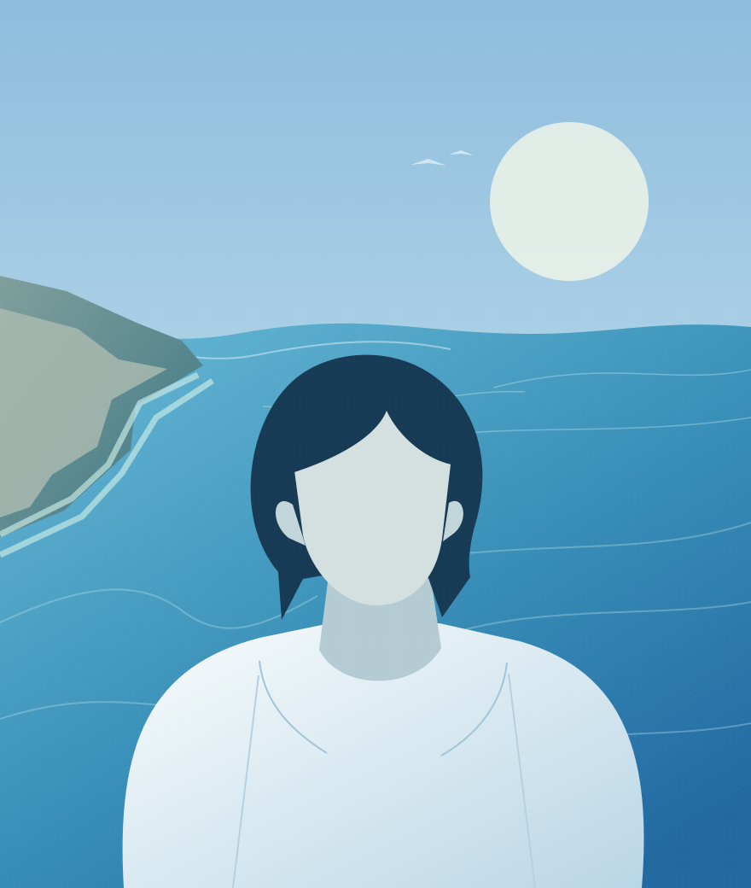

AI Product
Story Graph
AI-assisted visual storytelling and information mapping.
Adventuring on Earth 🌍
I explore the world around me — from places and landscapes to how technology can turn complex ideas into useful products, workflows, and stories.

Portrait placeholderA little space for my next adventure.
Behind the projects, there’s a person.
Here’s a little of my story.
Ideas I’m turning into products,
experiments, and stories.
AI-assisted visual storytelling and information mapping.
Exploring how data and AI can support crime prevention and spatial understanding.
A little room for the next “what if?”. Something new is taking shape.
A work in progress, just like me.
Things I’m learning, building,
and figuring out along the way.
No fixed destination.
Just good questions.
A new idea, a shared curiosity, or just a hello.
I’d love to hear from you.